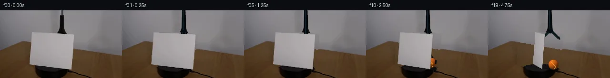

![首帧]()

Round 00
2026-11-04T19:18:37.770757+00:00像素候选变化代码 +305/−0inspection 更新
pixels e81d22969541f944 · code 14144c36febd2469
查看本轮 generate.py 真实 diff
--- previous/generate.py +++ current/generate.py @@ -0,0 +1,305 @@ +#!/usr/bin/env python3 +"""Generate the 20-frame PixelWorld continuation using local pixel operations only.""" + +from pathlib import Path +import math + +import cv2 +import numpy as np +from PIL import Image, ImageDraw, ImageFont + +import artifact_io + + +ROOT = Path(__file__).resolve().parent +W, H = 256, 144 +CARD_SRC = np.float32([[67, 47], [155, 51], [150, 125], [62, 115]]) + + +def smoothstep(v): + v = np.clip(v, 0.0, 1.0) + return v * v * (3.0 - 2.0 * v) + + +def horizon(x): + """Measured wall/table boundary, piecewise through three visible points.""" + x = np.asarray(x, dtype=np.float32) + return np.where(x <= 51.0, 84.0 - 19.0 * x / 51.0, + 65.0 + 37.0 * (x - 51.0) / 204.0) + + +def features(x, y, degree=3): + """Small normalized polynomial basis used to continue smooth scene lighting.""" + xn = (x - 127.5) / 128.0 + yn = (y - 71.5) / 72.0 + cols = [np.ones_like(xn), xn, yn, xn * yn, xn * xn, yn * yn] + if degree >= 3: + cols += [xn ** 3, yn ** 3, xn * xn * yn, xn * yn * yn] + return np.stack(cols, axis=-1) + + +def fitted_underlay(source, card_hole): + """Continue wall/table pixels underneath the source card with fitted gradients.""" + yy, xx = np.mgrid[0:H, 0:W] + boundary = horizon(xx) + shaft = (xx >= 118) & (xx <= 140) & (yy <= 55) + wall_samples = (yy < boundary - 3) & ~card_hole & ~shaft + platform = (((xx - 109.0) / 45.0) ** 2 + ((yy - 130.0) / 19.0) ** 2 < 1.2) + cable = (yy > 124) & (xx > 142) + table_samples = (yy > boundary + 3) & ~card_hole & ~platform & ~cable + + wall_coef = np.linalg.lstsq( + features(xx[wall_samples], yy[wall_samples], 3), + source[wall_samples].astype(np.float32), rcond=None)[0] + table_coef = np.linalg.lstsq( + features(xx[table_samples], yy[table_samples], 3), + source[table_samples].astype(np.float32), rcond=None)[0] + + wall = features(xx, yy, 3) @ wall_coef + table = features(xx, yy, 3) @ table_coef + # Low-amplitude deterministic grain follows the table perspective. + grain = (1.7 * np.sin(xx * 0.118 + yy * 0.037) + + 0.9 * np.sin(xx * 0.031 - yy * 0.163) + + 0.6 * np.sin((xx + yy) * 0.41)) + table += grain[..., None] * np.array([1.00, 0.72, 0.43], np.float32) + model = np.where((yy < boundary)[..., None], wall, table) + model = np.clip(model, 0, 255).astype(np.uint8) + + under = source.copy() + under[card_hole] = model[card_hole] + + # Reconstruct only the portion of the black platform formerly hidden by card. + dx = (xx - 109.0) / 39.0 + dy = (yy - 124.0) / 10.5 + top = dx * dx + dy * dy <= 1.0 + top_luma = np.clip(24.0 - 10.0 * ((yy - 116.0) / 18.0) - 4.0 * np.abs(dx), 7, 26) + platform_rgb = np.stack([top_luma * 0.91, top_luma * 0.90, top_luma], axis=-1) + restore = top & card_hole + under[restore] = np.clip(platform_rgb[restore], 0, 255).astype(np.uint8) + return under + + +def card_destination(angle_degrees): + """Project the four measured card corners after clockwise yaw about its centerline.""" + theta = math.radians(angle_degrees) + ct, st = math.cos(theta), math.sin(theta) + # Top and bottom axis points are the midpoints of measured opposing corners. + axis_top = (CARD_SRC[0] + CARD_SRC[1]) * 0.5 … diff truncated; 218 more lines …